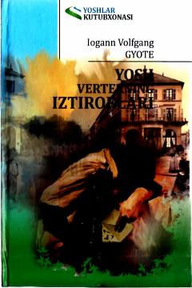

YVYosh Verterning cheksiz muhabbati va ruhiy iztiroblari haqida klassik roman.
Bu asar buyuk nemis yozuvchisi Iogann Volfgang Gyotening mashhur epistolar romani bo'lib, yosh Verterning chuqur muhabbati va ruhiy iztiroblari haqida hikoya qiladi. Roman xatlar shaklida yozilgan bo'lib, qahramonning his-tuyg'ulari va fojiaviy taqdirini tasvirlaydi. Kitob Yanglish Egamova tomonidan nemis tilidan o'zbek tiliga tarjima qilingan.